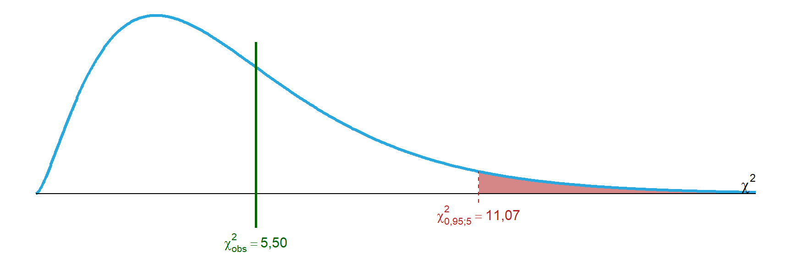
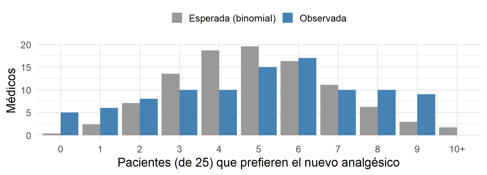
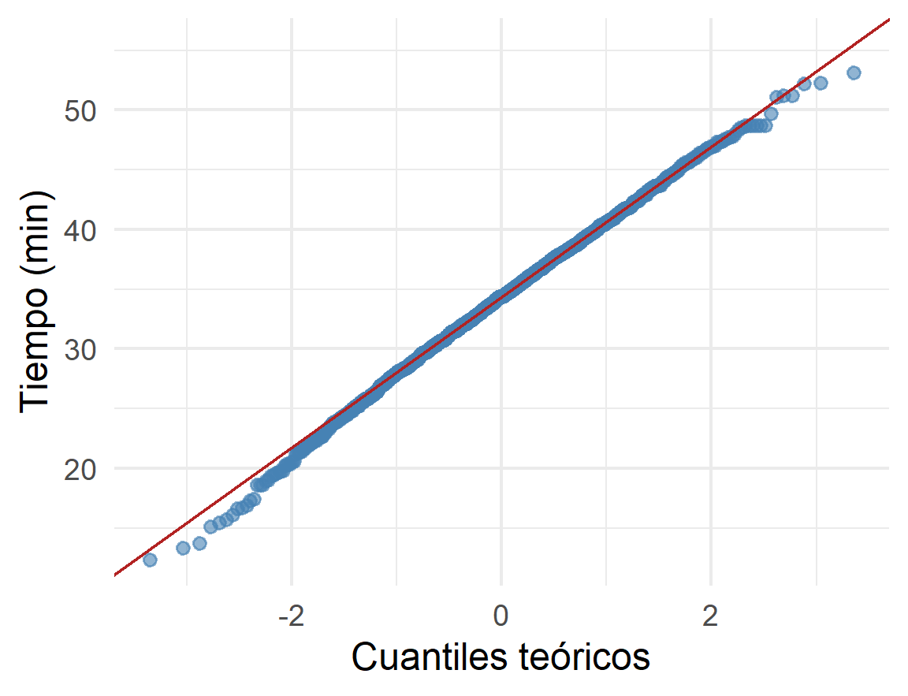
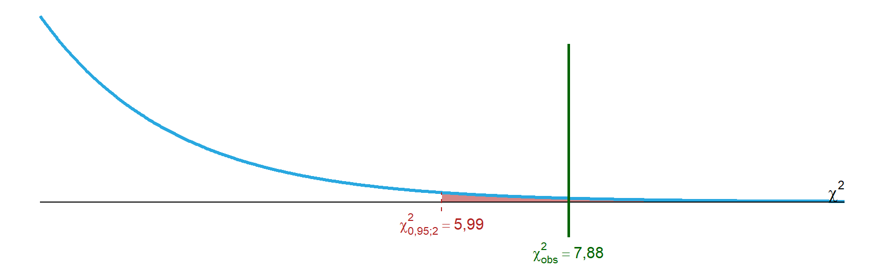

Chi-squared test for given probabilities
data: c(315, 101, 108, 32)
X-squared = 0.47002, df = 3, p-value = 0.9254Estadística II
Escuela de Matemáticas · Universidad Industrial de Santander
¿Se ajustan los datos a un modelo?
¿Es equilibrado un dado? ¿Siguen las llamadas una Poisson?
→ Tablas unidimensionales: bondad de ajuste.
¿Están relacionadas dos variables?
¿Depende el hábito de fumar del género?
→ Tablas de doble entrada: independencia y homogeneidad.
Lo que se analiza son frecuencias: las variables pueden ser cualitativas o cuantitativas agrupadas en clases.
\[ \chi^2 = \sum_{i=1}^{k} \frac{(o_i - e_i)^2}{e_i} \]
Propuesto por Karl Pearson en 1900 (Daniel, 1987, p. 461; Pearson, 1900).
\[ \nu = k - 1 - m \]
Recomendaciones de Cochran (Cochran, 1954; Daniel, 1987, pp. 468, 481-482):
En este curso: agrupar clases si alguna esperada es menor que 5, como recomiendan Walpole et al. (2012, p. 372).
La regla es sobre las frecuencias esperadas, no sobre las observadas.
| Cara | 1 | 2 | 3 | 4 | 5 | 6 |
|---|---|---|---|---|---|---|
| Observada | 18 | 22 | 16 | 25 | 14 | 25 |
| Esperada | 20 | 20 | 20 | 20 | 20 | 20 |

\(\chi^2_{\text{obs}} = 5{,}50 < 11{,}07\) → no se rechaza \(H_0\) (valor p \(= 0{,}358\)).
Teoría: proporción \(9 : 3 : 3 : 1\) (Mendel, 1866).
| Redonda amarilla | Rugosa amarilla | Redonda verde | Rugosa verde | |
|---|---|---|---|---|
| Observada | 315 | 101 | 108 | 32 |
| Esperada | 312,75 | 104,25 | 104,25 | 34,75 |
\(\chi^2_{\text{obs}} = 0{,}47\), valor p \(= 0{,}93\) → los datos se ajustan muy bien a la teoría.
100 médicos, 25 pacientes cada uno; \(\hat{p} = 500/2500 = 0{,}20\) (Daniel, 1987, pp. 468-470).

Agrupando para que ninguna esperada sea menor que 5: 7 clases, \(\nu = 7 - 1 - 1 = 5\).
\[ \chi^2_{\text{obs}} = 20{,}75 > \chi^2_{0{,}95;\,5} = 11{,}07 \quad (\text{valor p} = 0{,}0009) \]
Se rechaza \(H_0\). Con el criterio de Daniel (Cochran), \(\chi^2 = 47{,}6\) con 8 gl: la misma conclusión.
¿Por qué? Media de 5, como predice la binomial, pero varianza de 6,40 frente a 4. Una explicación posible: la probabilidad de preferirlo no es la misma para los pacientes de todos los médicos.
40 minutos, \(\hat{\lambda} = 2{,}225\) (ejercicio 8 del capítulo 1 de Estadística I).
| Llamadas | 0 o 1 | 2 | 3 | 4 o más |
|---|---|---|---|---|
| Observada | 13 | 12 | 8 | 7 |
| Esperada (Poisson) | 13,94 | 10,70 | 7,94 | 7,42 |
\(\nu = 4 - 1 - 1 = 2\): \(\ \chi^2_{\text{obs}} = 0{,}246\), valor p \(= 0{,}88\) (con \(\nu = 3\): 0,97).
No se rechaza \(H_0\): el modelo de Poisson describe bien las llamadas.
1266 entregas, \(\bar{x} = 34{,}23\), \(s = 6{,}46\) (\(m = 2\)), seis clases:
| Minutos | \(< 25\) | \([25, 30)\) | \([30, 35)\) | \([35, 40)\) | \([40, 45)\) | \(\ge 45\) |
|---|---|---|---|---|---|---|
| Observada | 98 | 213 | 371 | 350 | 175 | 59 |
| Esperada | 96,98 | 227,62 | 368,51 | 337,54 | 174,88 | 60,48 |
\(\nu = 3\): \(\ \chi^2_{\text{obs}} = 1{,}46\), valor p \(= 0{,}69\) → la normal es un buen modelo.
Para variables continuas, la chi-cuadrado no es la prueba más apropiada (Daniel, 1987, p. 468): depende de las clases y pierde información.

\(H_0\): las dos variables son independientes.
Si \(H_0\) es cierta, \(P(A \cap B) = P(A)\,P(B)\) (capítulo 2 de Estadística I), y (Walpole et al., 2012, pp. 374-376):
\[ e_{ij} = \frac{(\text{total fila } i)(\text{total columna } j)}{n}, \qquad \nu = (r - 1)(c - 1) \]
1000 votantes (Walpole et al., 2012, pp. 374-376):
| Bajo | Medio | Alto | Total | |
|---|---|---|---|---|
| A favor | 182 (200,9) | 213 (209,9) | 203 (187,2) | 598 |
| En contra | 154 (135,1) | 138 (141,1) | 110 (125,8) | 402 |

\(\chi^2_{\text{obs}} = 7{,}88 > 5{,}99\) → la opinión y el ingreso no son independientes.
| Fuma | Hombre | Mujer | Total |
|---|---|---|---|
| Sí | 65 (57,01) | 58 (65,99) | 123 |
| No | 43 (50,99) | 67 (59,01) | 110 |
\(\chi^2_{\text{obs}} = 4{,}42 > 3{,}84\) (valor p \(= 0{,}036\)) → están asociados: fuma el 60,2 % de los hombres y el 46,4 % de las mujeres.
En una tabla de 2 × 2 equivale a la prueba \(z\) de dos proporciones: \(z^2 = 2{,}10^2 = 4{,}42\) (Walpole et al., 2012, p. 378).
Con la corrección de Yates: 3,88, valor p \(= 0{,}049\).
Independencia
Una muestra; cada unidad se clasifica según dos variables. Totales aleatorios.
Homogeneidad
Varias muestras de tamaños fijados de antemano. ¿Tienen las poblaciones la misma distribución?
(Daniel, 1987, pp. 487-488; Walpole et al., 2012, p. 376)
Los cálculos son idénticos. Con dos categorías: prueba de que \(k\) proporciones son iguales (Walpole et al., 2012, p. 378).
(Walpole et al., 2012, p. 379)
| Matutino | Vespertino | Nocturno | |
|---|---|---|---|
| Defectuosos | 45 | 55 | 70 |
| No defectuosos | 905 | 890 | 870 |
Esperadas menores que 5 en una tabla de 2 × 2: prueba exacta de Fisher, basada en la hipergeométrica (Devore, 2008, p. 358; Walpole et al., 2012, p. 376).
| Mejoró | No mejoró | |
|---|---|---|
| Tratamiento | 5 | 1 |
| Placebo | 1 | 5 |
Bajo \(H_0\): \(X \sim \text{Hip}(12, 6, 6)\), y \(P(X = 5) = 0{,}039\).
\[ \text{valor p} = P(X = 0) + P(X = 1) + P(X = 5) + P(X = 6) = 0{,}080 \]
[1] 0.08008658[1] 0.02092134Fisher: no se rechaza (0,080). Chi-cuadrado, usada indebidamente: se rechazaría (0,021). La aproximación falla con esperadas pequeñas.
| Prueba | Grados de libertad | En R |
|---|---|---|
| Bondad de ajuste (proporciones dadas) | \(k - 1\) | chisq.test(x, p = ) |
| Bondad de ajuste (\(m\) parámetros) | \(k - 1 - m\) | pchisq() |
| Independencia | \((r-1)(c-1)\) | chisq.test(tabla) |
| Homogeneidad | \((r-1)(c-1)\) | chisq.test(), prop.test() |
| Exacta de Fisher | — | fisher.test(tabla) |
| Normalidad | — | shapiro.test(), ks.test() |
Revise siempre $expected (R Core Team, 2024).
Estadística II · UIS